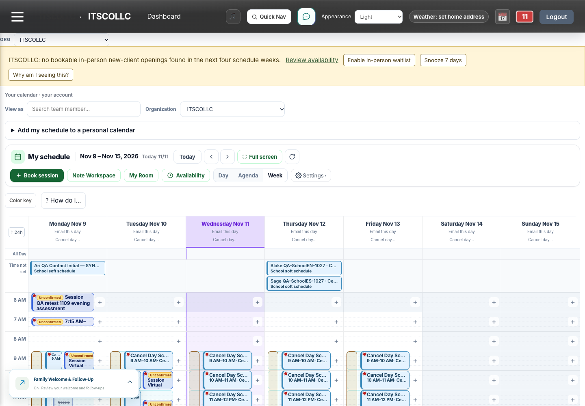
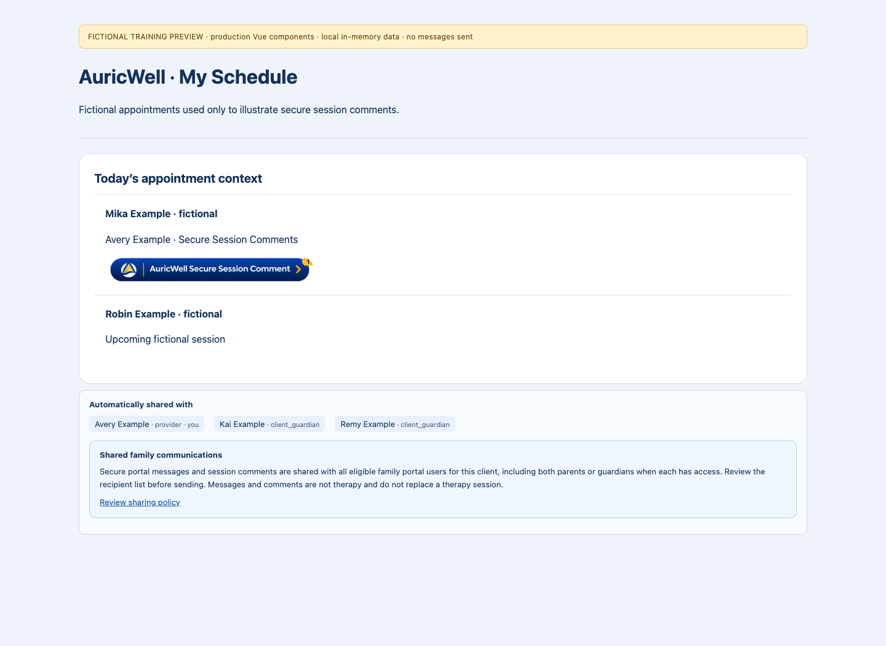
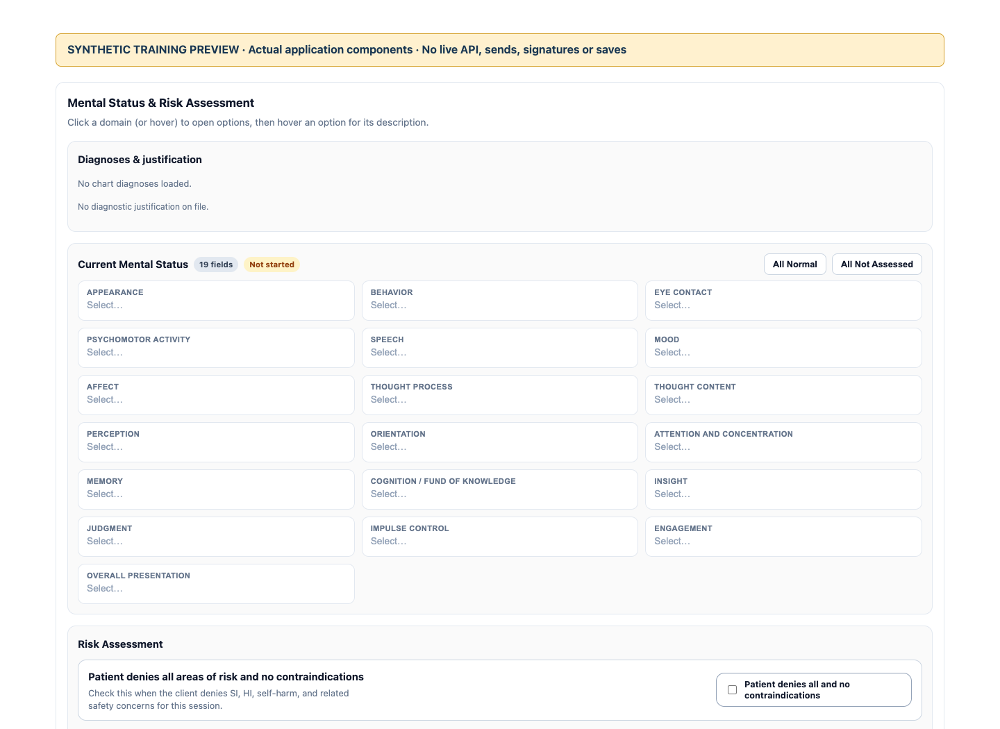
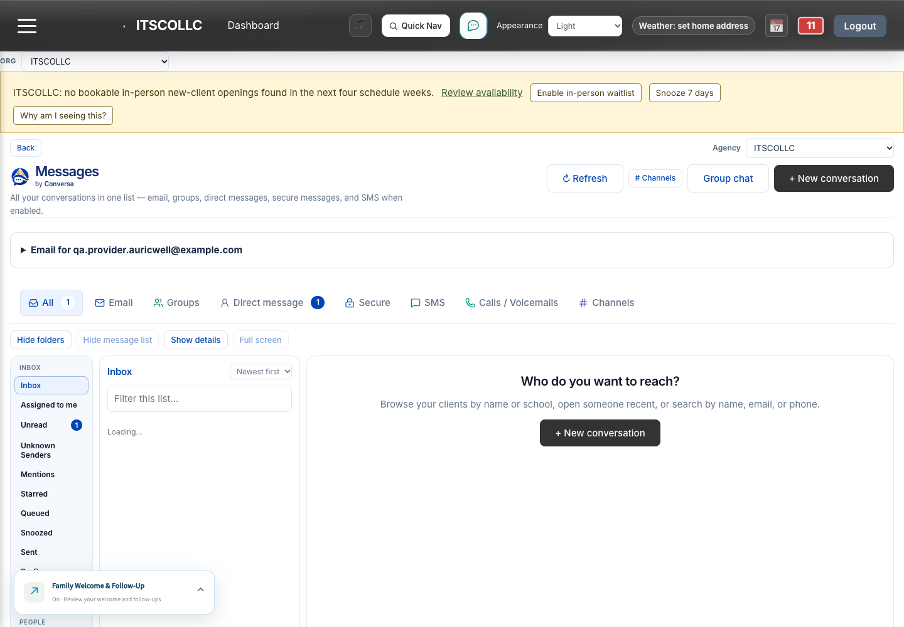
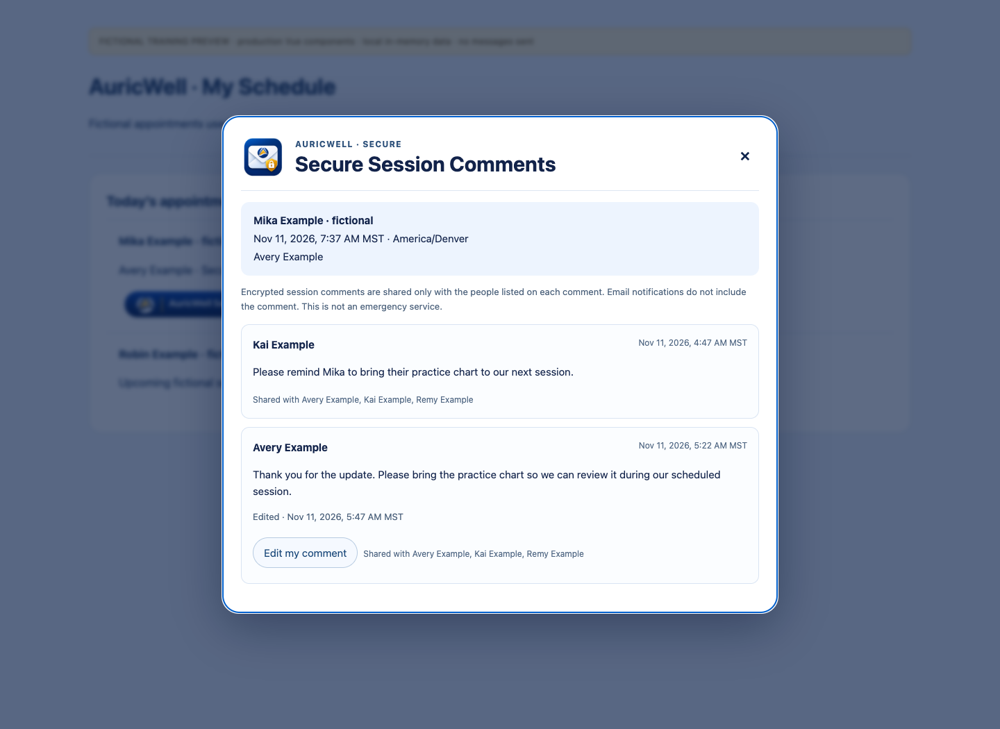
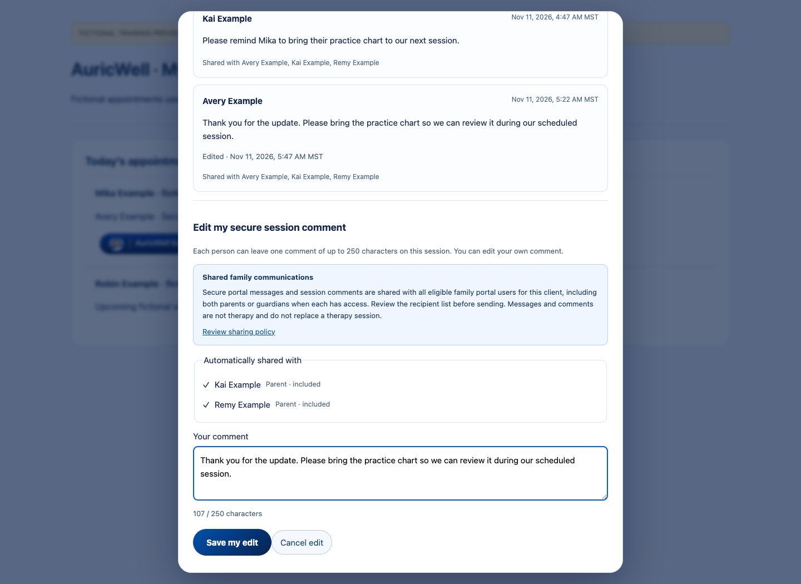
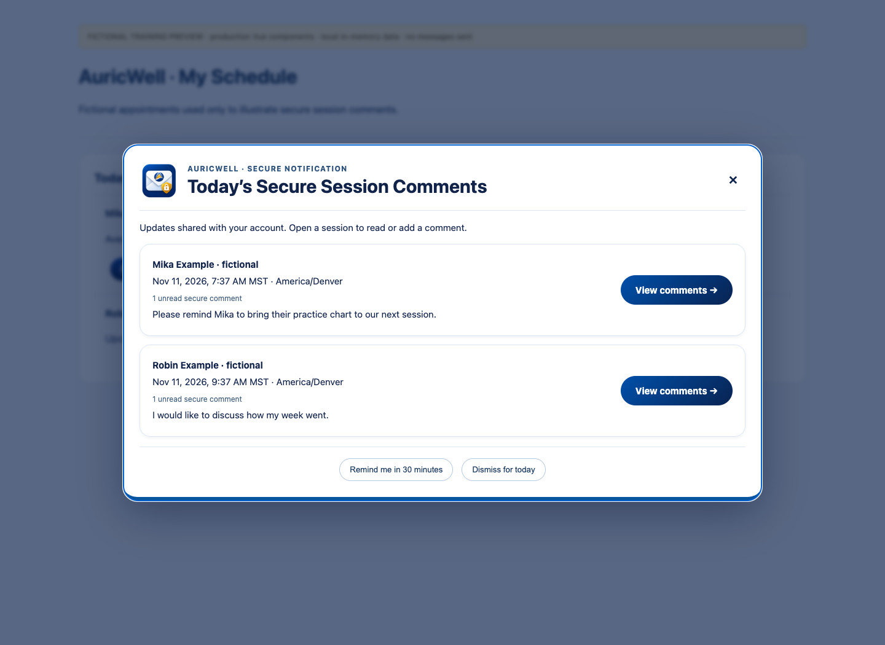
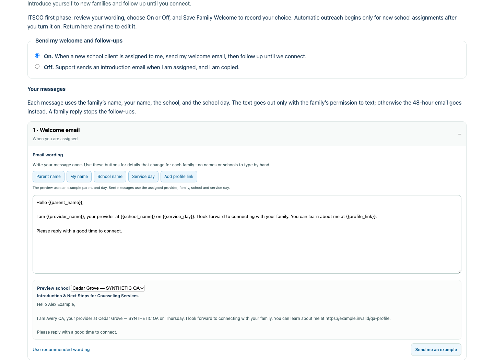
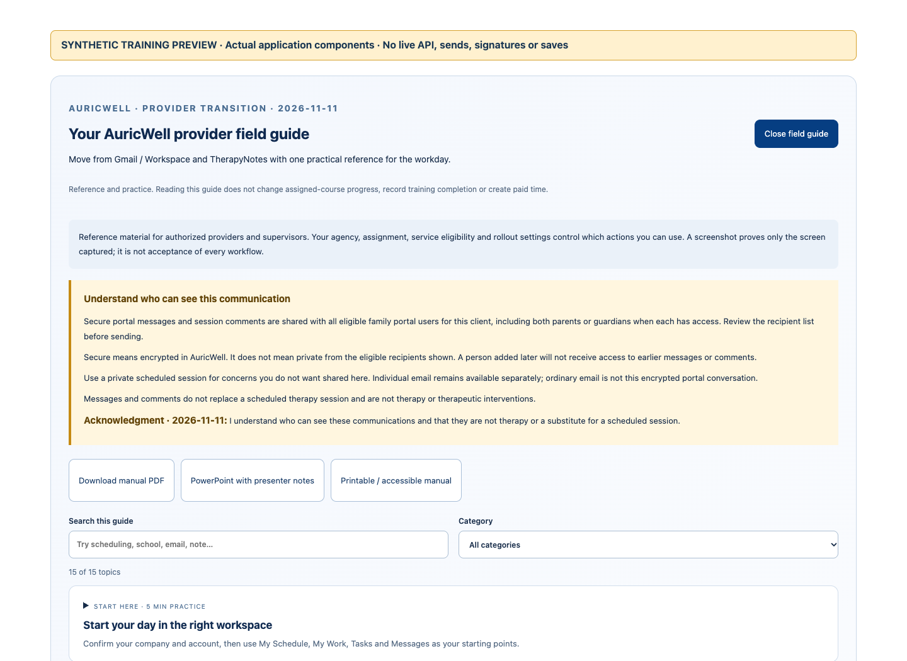

AuricWell provider training slidesAuricWell · Provider transition · November 11, 2026
Your AuricWell workday
A practical move from Gmail / Workspace and TherapyNotes.

Actual synthetic QA My Schedule. Availability depends on your agency, role and release.
- Book the right session.
- Document from the same appointment.
- Communicate with the right people.
- Reconcile before cutover.
AuricWell · Read this before your first send
What secure portal sharing means
Provider and family portal messages/comments use the full currently eligible family audience.

Actual release-candidate audience component · Fictional fixtures · Live acceptance is separate.
- Read every recipient name before Send.
- Both parents can read when eligible; later-added users cannot read earlier content.
- For individual concerns: a private scheduled session or individual ordinary email (not the encrypted portal).
- Portal comments/messages are not therapy or a substitute for sessions.
AuricWell · Start here
Start your day in the right workspace
Confirm your company and account, then use My Schedule, My Work, Tasks and Messages as your starting points.
Actual synthetic QA · Provider Avery (1433) · Agency 450 · Chrome 1440×1000 · November 11, 2026 · Build in CAPTURE-MANIFEST.json. Actions depend on role/configuration.
- Confirm your own name and selected company.
- Use My Schedule, My Work, Tasks and Messages for their linked work.
- Review your own profile, then use normal Unlock when needed.
AuricWell · Scheduling
Book one correct appointment
Choose the right client, provider, service, date, duration and location before saving.
Actual synthetic QA · Provider Avery (1433) · Agency 450 · Chrome 1440×1000 · November 11, 2026 · Build in CAPTURE-MANIFEST.json. Actions depend on role/configuration.
- Confirm client, provider, service, time, duration and location.
- Review conflicts, eligibility, recurrence and notifications.
- Save once and reopen the actual booked occurrence.
AuricWell · Scheduling
Change a visit without changing the wrong series
Distinguish one occurrence, future recurring visits, school planning and office reservations.
Actual synthetic QA · Provider Avery (1433) · Agency 450 · Chrome 1440×1000 · November 11, 2026 · Build in CAPTURE-MANIFEST.json. Actions depend on role/configuration.
- Choose one occurrence or the intended future-series scope.
- Check the changed visit and an unaffected week.
- Keep calendar subscriptions private; edit the schedule in this app.
AuricWell · Scheduling
Join telehealth and supervision using the intended audio
Use browser audio/video for the scheduled virtual session; phone dial-in is a separately configured option.
Actual synthetic QA · Provider Avery (1433) · Agency 450 · Chrome 1440×1000 · November 11, 2026 · Build in CAPTURE-MANIFEST.json. Actions depend on role/configuration.
- Open the intended session with your own invited account.
- Use browser audio/video; phone dial-in is a separate setting.
- Report the exact join error and record any approved fallback accurately.
AuricWell · Clinical documentation
Read the correct chart and readiness state
Separate enrollment paperwork, signed releases, clinical assessment and treatment-plan readiness.

Actual application component · Local synthetic training preview · No live records, saves or sends · Source checkout 912a48c05 + training changes. Not live acceptance.
- Confirm the assigned client and current clinical source.
- Enrollment paperwork is separate from a clinical intake assessment.
- Read current release decisions and route coverage blocks to billing/support.
AuricWell · Clinical documentation
Write the note linked to the actual session
Start from the appointment, review source context, save a draft and reopen the same work.
Actual application component · Local synthetic training preview · No live records, saves or sends · Source checkout 912a48c05 + training changes. Not live acceptance.
- Start from the actual appointment and review its source details.
- Assess and review the content; blank does not mean normal.
- Save, reload and reopen the same unsigned draft from linked worklists.
AuricWell · Clinical documentation
Build and review an individualized treatment plan
Check diagnoses, goals, objectives, original dates and reminders instead of accepting an imported or generated draft unchanged.
Actual application component · Local synthetic training preview · No live records, saves or sends · Source checkout 912a48c05 + training changes. Not live acceptance.
- Review this client’s diagnosis, concerns, goals and objectives.
- Preserve stated original dates and review any proposed new date.
- Check the review interval/reminder and save without a training signature.
AuricWell · Communication
Move sensitive conversations into secure messaging
Use protected in-app communication with a clearly identified audience; secure does not mean private from other eligible family users.

Actual synthetic QA · Provider Avery (1433) · Agency 450 · Chrome 1440×1000 · November 11, 2026 · Build in CAPTURE-MANIFEST.json. Actions depend on role/configuration.
- Check the channel and every named recipient before Send.
- Shared portal messages include all currently eligible family users.
- Ordinary individual email is a separate channel.
- Review delivery history before retrying an uncertain send.
AuricWell · Communication
Use AuricWell Secure Session Comments
Leave one short session-linked update, edit your own comment when needed, and find the current version on the appointment and in history.

Actual release-candidate application component · Synthetic fixture-only capture · No live records, saves or sends. See SECURE-COMMENTS-CAPTURE-MANIFEST.json. Live acceptance is separate.
- Open the exact client’s appointment and confirm its date/time.
- Review the existing comments and the full named eligible audience.
- Leave one brief comment; edit your own when it needs an update.
AuricWell · Secure Session Comments
One brief comment, kept current
Use a short update on the session. Use secure messages when you need more room.

Actual release-candidate application component · Synthetic fixture-only capture · No live records, saves or sends. See SECURE-COMMENTS-CAPTURE-MANIFEST.json. Live acceptance is separate.
- Up to 250 Unicode characters.
- One comment per person, appointment and client.
- Edit your own comment; Edited and date/time identify the update.
- An eligible new guardian sees the updated version, never earlier versions.
AuricWell · My Schedule · Secure Session Comments
Review today’s secure updates
Use today’s view when you sign in; past comments remain linked to their appointments.

Actual release-candidate day-list component · Fictional fixtures · Not live acceptance.
- Open the branded button over My Schedule.
- View the specific comment to mark it opened.
- Remind me in 30 minutes or Dismiss for today.
- After the last session ends, use appointment icons and history.
AuricWell · Communication
Personalize Family Welcome & Follow-Up safely
Write your preferred wording once; use labeled automatic fields for the right family, provider and school.

Actual application component · Local synthetic training preview · No live records, saves or sends · Source checkout 912a48c05 + training changes. Not live acceptance.
- Write your own wording using the labeled automatic-field buttons.
- Preview each school, your name and your profile link.
- Welcome at assignment; follow-ups at 48 and 96 hours; a reply stops them.
AuricWell · Communication
Help families use the portal without crossing access
Each guardian uses their own account, enrollment and signatures; a pending invitation is a distinct state.
Actual synthetic QA · Provider Avery (1433) · Agency 450 · Chrome 1440×1000 · November 11, 2026 · Build in CAPTURE-MANIFEST.json. Actions depend on role/configuration.
- Each eligible guardian uses their own account and private enrollment answers.
- Distinguish pending own enrollment from no linked client.
- Use current release decisions and the authorized update-request controls.
AuricWell · Team workflows
Close the loop on tasks and supervision
Follow the linked work item, preserve draft/signature boundaries, and use the supervisor’s actual queue.
Actual synthetic QA · Provider Avery (1433) · Agency 450 · Chrome 1440×1000 · November 11, 2026 · Build in CAPTURE-MANIFEST.json. Actions depend on role/configuration.
- Open the linked record before completing a task.
- Reuse the existing note draft and normal review/cosign process.
- A supervisor demonstrates their own actual queue.
AuricWell · Team workflows
Know what belongs to billing and support
Accurate identity, coverage review, clinical completion and claim transmission are separate checkpoints.
Actual synthetic QA · Provider Avery (1433) · Agency 450 · Chrome 1440×1000 · November 11, 2026 · Build in CAPTURE-MANIFEST.json. Actions depend on role/configuration.
- Keep clinical identity, service, source time and documentation accurate.
- Billing reviews primary/secondary coverage and coordination.
- Never collect card numbers in comments, notes or ordinary messages.
- Clinical signing, claim preparation and payer submission are separate.
AuricWell · Transition
Reconcile TherapyNotes and Workspace before cutover
Move one reviewed caseload at a time while retaining source access and explicit calendar/mail responsibilities.
Actual synthetic QA · Provider Avery (1433) · Agency 450 · Chrome 1440×1000 · November 11, 2026 · Build in CAPTURE-MANIFEST.json. Actions depend on role/configuration.
- Rehearse one provider, one client and one actual week.
- Resolve existing identity; preserve chart and clinical history.
- Verify original dates and every medical archive volume.
- Keep source access until calendar, mail and record ownership are reconciled.
AuricWell · Start here
Protect access and report a useful problem
Keep private information out of ordinary email and report exact context without guessing or retrying blindly.

Actual application component · Local synthetic training preview · No live records, saves or sends · Source checkout 912a48c05 + training changes. Not live acceptance.
- Use your own login, company context and normal Unlock.
- Report the exact screen, time, reference and error safely.
- Check saved state/history before retrying an uncertain action.
AuricWell · Teach-back and follow-through
Practice, then expand
Run the checklist in a supervised synthetic exercise and name the owner of each open issue.
My Learning → On-Demand contains the field guide. Reading is separate from assigned completion.
- Find your correct company and appointment.
- Save and reopen the same unsigned draft.
- Check recipients and automatic fields.
- Confirm cutover ownership and unresolved gates.